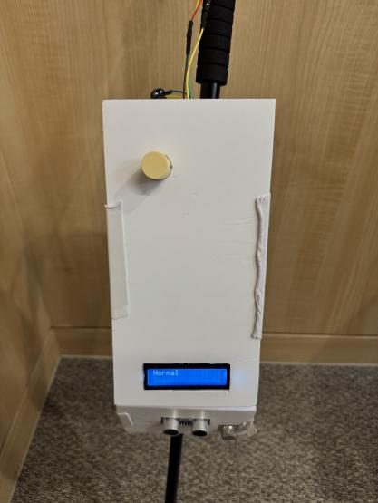
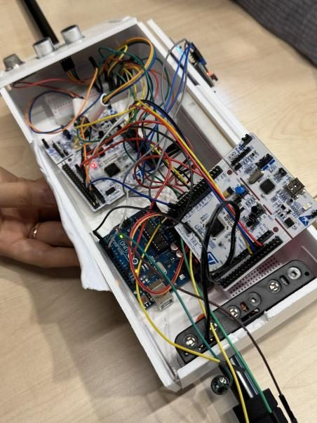
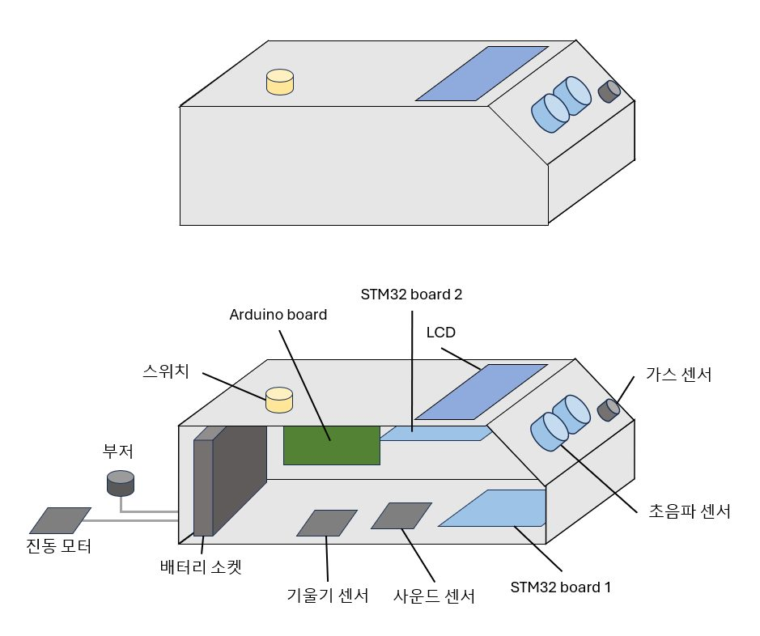
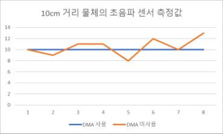

임베디드시스템설계#STM32#DMA#SPI#ADC
STM32 탈부착형 보행 보조 모듈
임베디드시스템설계 Project 2 · 7조 · 보고서 제출
- 문제
- 일반 지팡이는 공중에 튀어나온 장애물, 낙상, 가스 누출을 알려 주지 못하고, 스마트 지팡이는 $500 이상으로 비쌉니다.
- 접근
- 기존 지팡이에 붙이는 모듈로 만들었습니다. STM32 두 대와 Arduino로 역할을 나누고, HAL 없이 레지스터로 ADC, SPI, DMA를 직접 설정했습니다.
- 결과
- DMA를 쓰면 CPU 점유율이 95%에서 5%로 떨어졌고, 초음파 측정 주기가 흔들리던 문제가 사라졌습니다. 재료비는 약 $30입니다.




시스템 구조
DMA 유무 비교
DMA 없이 돌리면 CPU가 ADC 처리에 묶여 초음파의 100ms 갱신 주기가 흔들렸고, 같은 10cm 물체가 8~13cm로 다르게 찍혔습니다. 오실로스코프와 내부 타이머로 확인했습니다.

핵심 구현
- 72MHz 클록 트리, ADC 스캔과 연속 변환, DMA 순환 모드를 레지스터로 설정
- SPI 수신을 DMA에 넘겨 CPU가 기다리지 않게 함
- 낙상은 기울기 5초 지속과 충격음을 AND로 묶어, 지팡이를 그냥 내려놓은 경우와 구분
- 장애물이 10cm, 5cm, 3cm 안으로 들어올수록 진동 세기를 올림
링크
- 시연 영상YouTube